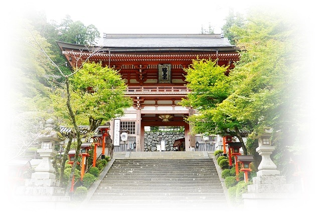

貴船～鞍馬へのお散歩コース
貴船～鞍馬へのお散歩コース
京都を歩こう

貴船～鞍馬、京都お散歩コース
私が年に２度は行く、京都お散歩コース【貴船～鞍馬】を紹介します。
京都には歴史探索できるお散歩コースがありますね。
・八坂神社～南禅寺～哲学の道～銀閣寺
無料できれいな桜・紅葉が見れますね。（銀閣寺：優良）
・泉涌寺～東福寺～伏見稲荷大社
有料の庭園が素晴らしい、伏見稲荷は年中行事が多くあきない。
他にもお散歩コースはありますが、ここでは夏に行くお散歩コース【貴船～鞍馬】を案内します。
貴船～鞍馬お勧めの理由

 一日中楽しむのにちょうど良い時間構成になる。
一日中楽しむのにちょうど良い時間構成になる。
 山道に急斜面などあり、運土不足の解消になる。
山道に急斜面などあり、運土不足の解消になる。
 古都の情緒を楽しめる
古都の情緒を楽しめる
 美味しい川床料理がある
美味しい川床料理がある
 パワースポットが多く、癒しと自己の回復を感じれる。
パワースポットが多く、癒しと自己の回復を感じれる。
 天然温泉がある
天然温泉がある
お気に入りのポイントは人それぞれ、貴船・鞍馬であなたのお気に入りポイントが見つかるかも！
貴船～鞍馬参道案内図
ＨＰ更新のお知らせ
2021.3.22 タイムオーバー、取り合えず完成にしとく。
2021.3.21 トップページ、散歩コースページ追加。
2021.3.18 川床料理のページを追加。
2021.3.12 構成を考えテンプレートを決める。
2021.3.10 ホームページ作成を開始。
2021.3.21 トップページ、散歩コースページ追加。
2021.3.18 川床料理のページを追加。
2021.3.12 構成を考えテンプレートを決める。
2021.3.10 ホームページ作成を開始。